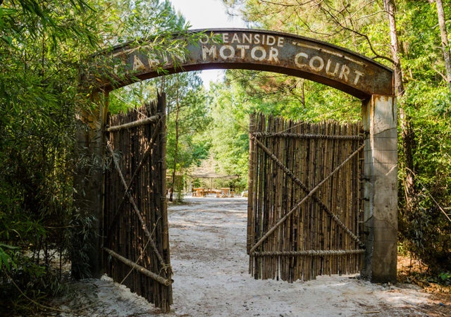

Oceanside es una comunidad de sobrevivientes ubicada cerca de las costas de Virginia. Su perímetro es impreciso ya que no la conforman muros sino una extensa y tupida cobertura boscosa que hace casi imposible el encuentro de la comunidad. El acceso más claro es un gran portón de madera con columnas de concreto